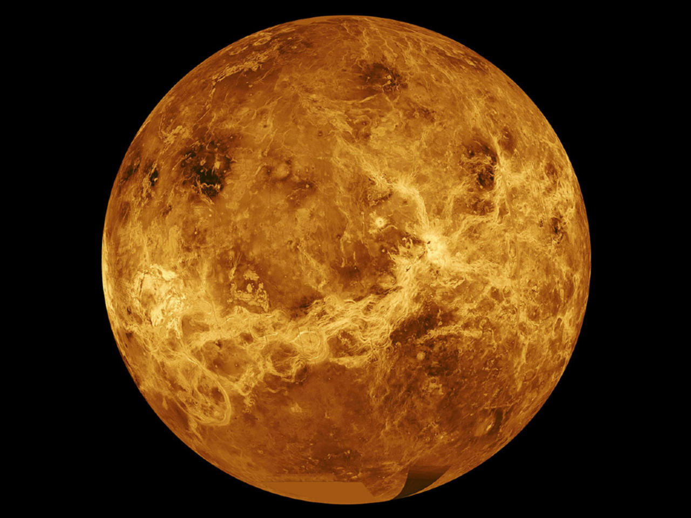

Ciencia
La vida en Venus se tambalea
AYER 07:20
Poco después de que estallase la noticia de la detección de un gas asociado a la vida en Venus, un astrónomo holandés hizo lo que todo científico debe hacer cuando se publica un hallazgo asombroso: intentar reproducirlo. ¿Era cierto que en la atmósfera de Venus hay fosfina, un gas que en la Tierra está asociado a los microbios? Después de hacer un reanálisis de los datos originales, el equipo de Ignas Snellen en el Observatorio de Leiden (Holanda) lo tiene claro: no se puede afirmar que el gas esté ahí.
“Es imposible mantener los resultados del estudio original”, explica Snellen a este diario. Su equipo publicó hace unos días los resultados de su estudio, que aún es preliminar, pues no ha sido evaluado por expertos independientes. Al mismo tiempo, el equipo científico del radiotelescopio ALMA, en Chile, el más potente en su clase y cuyas observaciones fueron fundamentales en la detección de la fosfina, ha comenzado un reanálisis de los datos, que pueden haber quedado invalidados por un error de calibración de sus herramientas de análisis de la luz que llega de Venus.
Este telescopio es parte del Observatorio Austral Europeo, compuesto por 16 países europeos, incluida España, y que anunció el hallazgo original con un comunicado de prensa titulado: “Detectado un posible marcador de vida en Venus”. Ya en aquel momento muchos expertos fueron escépticos de que la vida fuese la explicación más plausible para la señal, si es que era real. Los responsables de ALMA no quieren decir si la señal se ha esfumado o no hasta que los autores del estudio original reanalicen los datos con las herramientas ya bien calibradas y comprueben si la señal de fosfina sigue ahí. La mayoría de expertos consultados, incluido el propio Snellen, lo ven casi imposible.
"La detección de fosfina en la atmósfera de Venus no se sostiene tras nuestro reanálisis de los datos”, concluye un equipo de casi 30 astrónomos de la NASA, la Universidad de Berkeley y otras instituciones, en un segundo estudio preliminar que asesta un hachazo casi mortal al estudio original. Sus responsables han vuelto a analizar los datos originales usando diferentes herramientas informáticas y llegan a la conclusión de que había un parámetro incorrecto en el estudio original. Sin ese parámetro, la observación de fosfina se desvanece.
Los autores de este trabajo mandaron sus resultados a Nature Astronomy, la revista que publicó el estudio original sobre la fosfina en Venus. La revista contactó al equipo responsable del estudio para que dé una respuesta. Esa respuesta puede tardar “semanas”, según explican los responsables del telescopio ALMA. Y hasta que se pronuncien, no habrá un veredicto definitivo.
La astrónoma del MIT Sara Seager y Jane Greaves, de la Universidad de Cardiff (Reino Unido), líderes del estudio original, han declinado comentar los dos estudios que cuestionan sus hallazgos. Greaves sí ha reconocido a este diario que están esperando a que ALMA termine la calibración de sus herramientas de análisis para volver a comprobar si la señal de la fosfina sigue ahí.
Gran parte del problema es que todos estos astrónomos afrontan un reto endiablado: detectar una molécula con una concentración de millonésimas en la atmósfera de un planeta infernal, muy desconocido y que está a más de 100 millones de kilómetros de la Tierra. Esto supone un reto tecnológico que solo instrumentos como ALMA, compuesto por 66 antenas instaladas en pleno desierto de Atacama, pueden afrontar. Y aún así es posible caer en un error.
Todo comienza con la imagen desnuda que se capta de Venus, la luz en bruto que despide su atmósfera y que está llena de ruido, de señales confusas que impiden saber qué es qué. Para aclararlo los astrónomos usan herramientas de software que han sido testadas en ambientes conocidos y que después aplican a entornos nuevos, como la atmósfera de Venus. Este planeta sufre un efecto invernadero tan salvaje que su superficie está a 400 grados. En cambio, las capas altas de la atmósfera pueden tener una temperatura similar a la de la Tierra. Es justo ahí donde el equipo detectó una señal de fosfina, un gas que en nuestro planeta está asociado a la presencia de vida: microbios. La señal original desnuda era complejísima, llena de líneas que se montaban unas sobre otras como en los mapas que representan cadenas montañosas.
El problema principal del estudio original es que el software de ALMA diseñado para analizar la imagen en bruto de Venus estaba mal calibrado, como muestra el reanálisis del equipo de la NASA. El equipo ha usado otros dos programas alternativos y con ellos la señal desaparece. Pero es que aunque hubiese señal, dicen, esta podría no ser fosfina, sino otro compuesto que emite una onda muy parecida: el tóxico dióxido de azufre que es ubicuo en el planeta. Además habría una inconsistencia entre la señal captada y la supuesta altura en la atmósfera a la que se detectó: la fosfina debería estar a más de 70 kilómetros de la superficie, pero el equipo la vio a unos 50.
GEl equipo de Snellen muestra además que el estudio original usó una función matemática para limpiar el ruido de la señal original de Venus que no era adecuada. Con la función, la señal de la fosfina es 15 veces más intensa que el ruido circundante, todo un descubrimiento. Pero usando otra función más convencional y aceptada en astronomía, la señal de la fosfina es solo dos veces más fuerte que el ruido, tan débil que no puede decirse que el compuesto esté ahí, explica Snellen. El responsable de este trabajo cree que el equipo de Greaves “cometió un error al analizar los datos, pero que no lo hicieron adrede”.
“Estoy decepcionado, pero no sorprendido”, explica Kevin Zahnle, científico de la NASA que actuó como experto independiente en la revisión del estudio original. “Yo fui partidario de la publicación de este trabajo porque quería ver si otros equipos lo confirmaban o lo refutaban, que es lo que ha pasado". El astrónomo no cree que el estudio original deba ser retirado. “Si cada caso de autoengaño como este fuese retractado habría que retirar el 49% de todos los estudios publicados en Science y Nature [las dos revistas científicas más prestigiosas]”, añade.
“Queda bastante claro que la detección no es correcta”, opina Víctor Rivilla, astrónomo del Centro de Astrobiología de Madrid que trabaja en la detección de fosfina como marcador de vida en objetos astronómicos mucho más lejanos. “El tipo de análisis de los datos que hicieron era muy sesgado; vieron fosfina porque era lo que querían ver”, resalta.
“Es poco probable que el descubrimiento original se sostenga, los dos grupos que lo cuestionan y sus argumentos son muy potentes”, opina Ignasi Ribas, astrónomo del Instituto de Ciencias del Espacio (IEEC-CSIC). “Aún así habrá que escuchar lo que tengan que decir los autores del estudio original. Esto no es un desprestigio ni nada fuera de lo normal, sino todo lo contrario. La ciencia avanza de esta forma y si no fuese así es que habría caído en el dogmatismo”, añade.
“Hay otros trabajos en marcha mirando en otras longitudes de onda buscando fosfina”, explica Miguel Ángel López-Valverde, del Instituto de Astrofísica de Andalucía. “Algunos ya están publicados y con resultados negativos, como el de Therese Encrenaz, y otros son trabajos teóricos también en marcha revisando los modelos de la química de las nubes, que será interesante examinar. Así que seguirá habiendo noticias sobre esa tentativa cada día más dudosa de detección de fosfina en Venus”, añade.
NOTICIAS RECIENTES
La Nebulosa del Anillo Azul
Resuelto un misterio cósmico desde hace más de una década
Continuar leyendoIngredientes de la vida
Demuestran que los ingredientes de la vida son más antiguos que las estrellas y los planetas
Continuar leyendoAstrónomo Mark Brown
“El hombre que mató a Plutón” y nos dejó con sólo 8 planetas
Continuar leyendoTelescopio de Arecibo será demolido
Radiotelescopio Arecibo en Puerto Rico será demolido por riesgo de colapso
Continuar leyendo¿Cuánto mide el universo?
El tamaño físicamente observable es de unos 93.000 millones de años luz
Continuar leyendoCápsula de Space X
Cápsula de Space X con su primera misión operativa tripulada se acopla a la ISS
Continuar leyendo¿Cómo empezó el universo?
Hay varias teorías y la del Big Bang es la que tiene el mayor número de seguidores entre los astrónomos
Continuar leyendoDescubren una galaxia fósil
La detección fue realizada a través del llamado Experimento de Evolución Galáctica del APOGEE.
Continuar leyendo